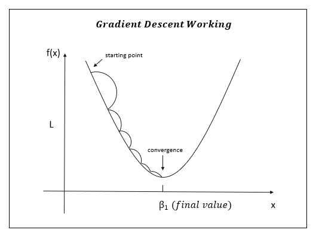

An Introduction to Linear Regression
The field of Data Science has undergone remarkable evolution, assimilating diverse domains like Statistics, Linear Algebra, Machine Learning, and Databases and intricately blending them for optimal synergy. Yet, at its core, what sets this domain apart and makes it exceptionally dynamic? - The formidable statistical algorithms.
Regression is a type of supervised machine learning task where the goal is to predict a continuous numerical output variable based on one or more input features. In regression analysis, the algorithm learns the relationship between the input features and the target variable from labeled training data.
The objective of regression is to model the underlying pattern or trend in the data so that the algorithm can make predictions on new, unseen data. The output variable in regression is quantitative and represents a range of possible values. Common applications of regression include predicting house prices, stock prices, temperature, sales, and various other numeric outcomes.
There are different types of regression models, including linear regression, polynomial regression, ridge regression, and support vector regression, among others. The choice of regression model depends on the nature of the data and the underlying relationship between the input features and the target variable.
One such fundamental statistical algorithm is Linear Regression. Despite its age, it remains perpetually relevant and should not be overlooked by an emerging data scientist like yourself. Understanding the foundational principles behind linear regression is essential for grasping the evolution of an entire class of statistical algorithms known as Generalized Linear Models. Additionally, this comprehension contributes to a broader understanding of other components of a typical statistical/machine learning algorithm, including aspects such as cost functions, coefficients, optimization, and more. As you delve into the intricacies of Linear Regression, you pave the way for a deeper exploration of the broader landscape of data science methodologies.
what is Linear Regression?
Linear regression is a statistical method and a fundamental algorithm in machine learning used for modeling the relationship between a dependent variable (target) and one or more independent variables (features). The goal of linear regression is to find the best-fit linear relationship (line) that predicts the dependent variable based on the given independent variables.
In simple linear regression, there is one independent variable, while in multiple linear regression, there are multiple independent variables. The linear relationship is represented by the equation of a straight line:
Υ = b0 + b1X1 + b2X2 + ... + bnXn
Where:
- Y is the dependent variable (target),
- b0 is the intercept,
- b1,b2, ... ,bn are the coefficients for the independent variables b1,b2, ... ,bn
The coefficients are estimated during the training process to minimize the difference between the predicted values and the actual values. Linear regression is widely used for tasks such as predicting house prices, stock prices, or any other continuous numeric outcome based on given input features.
The obstacle in Linear Regression:
While linear regression is a powerful and widely used tool, it is essential to be aware of potential challenges and limitations associated with this method. Some hurdles in linear regression include:
1. Assumption of Linearity: Linear regression assumes a linear relationship between the independent and dependent variables. If the true relationship is nonlinear, linear regression may not capture the underlying pattern accurately.
2. Assumption of Independence: The independence of observations is assumed in linear regression. If there is dependence among observations, it can lead to biased and inefficient estimates.
3. Assumption of Homoscedasticity: Linear regression assumes that the variance of the errors is constant across all levels of the independent variable(s). Heteroscedasticity, where the variance of errors is not constant, can affect the accuracy of predictions.
4. Assumption of Normality: The residuals (the differences between actual and predicted values) are assumed to be normally distributed. Departure from normality can impact the validity of statistical inferences.
5. Multicollinearity: This occurs when independent variables are highly correlated, making it challenging to separate their individual effects on the dependent variable. It can lead to unstable coefficient estimates.
6. Outliers and Influential Points: Outliers and influential points can significantly impact the results of linear regression. They can distort the estimated coefficients and affect the overall fit of the model.
7. Overfitting or Underfitting: If the model is too complex, it may overfit the training data and perform poorly on new data. On the other hand, an overly simple model may underfit the data, failing to capture important patterns.
8. Non-constant Variance of Residuals: The assumption of homoscedasticity also requires the residuals to have a constant variance. If the variance changes across levels of the independent variable, it violates this assumption.
Optimization Techniques for Linear Regression:
In this section, you will take a brief look at some techniques to prepare a linear regression model.
Gradient Descent:
Gradient Descent is an iterative optimization algorithm widely used in machine learning, especially in linear regression. The algorithm starts with initial parameter values and iteratively adjusts them to minimize a cost function, typically the Mean Squared Error (MSE) in linear regression. It calculates the gradients of the cost function with respect to each parameter, indicating the direction and magnitude of the steepest ascent. The parameters are updated by subtracting the product of the gradient and a learning rate. This process continues until convergence, where the algorithm finds parameter values that result in the minimum cost.
The key formula for updating a parameter θj :
θj = θj - α(∂J(θ) / ∂θj)
where α is the learning rate, J(θ) is the cost function, and (∂J(θ) / ∂θj) is the partial derivative of the cost function with respect ∂J(θ).
Stochastic Gradient Descent:
Stochastic Gradient Descent (SGD) is an optimization algorithm used in machine learning to train models, especially on large datasets. Unlike traditional gradient descent, which processes the entire dataset in each iteration, SGD updates the model parameters using a single randomly selected training example at a time. This introduces randomness, making it computationally faster and more suitable for extensive datasets.
The algorithm iteratively shuffles and processes each training example, computing gradients and updating parameters accordingly. While the stochastic nature introduces noise, it allows for more frequent updates and is particularly effective in scenarios with vast amounts of data, where computing gradients for the entire dataset in each iteration is impractical. Adjusting the learning rate over time helps mitigate potential oscillations in the convergence process.
Mini-Batch Gradient Descent:
Mini-Batch Gradient Descent is an optimization algorithm used in machine learning for training models that strikes a balance between the efficiency of Stochastic Gradient Descent (SGD) and the stability of Batch Gradient Descent. Instead of processing the entire dataset (Batch GD) or just one example (SGD) in each iteration, Mini-Batch GD divides the dataset into smaller batches and updates the model parameters based on the average gradient computed from a randomly selected batch.
This approach combines the benefits of faster convergence due to more frequent updates than Batch GD, while still benefiting from the reduced variance in parameter updates compared to pure SGD. The batch size is a hyperparameter that influences the algorithm's performance, allowing practitioners to tailor the method to the computational resources available and the characteristics of the dataset. Mini-Batch GD is widely used, especially in scenarios where the dataset is large, and computational efficiency is crucial.
Normal Equation:
The Normal Equation is a closed-form analytical solution to find the optimal parameters for a linear regression model without the need for iterative optimization algorithms like gradient descent. It provides a direct solution by setting the derivative of the cost function with respect to the model parameters to zero. In the context of linear regression, the Normal Equation is formulated as:
θ = (XTX)-1XTy
Where:
- θ is the vector of parameters (coefficients),
- X is the matrix of input features,
- y is the vector of target values.
The superscript T denotes the transpose of a matrix. The formula essentially involves matrix operations – multiplying matrices, finding the inverse, and matrix transpose. By applying the Normal Equation, one can directly compute the optimal parameters that minimize the Mean Squared Error (MSE) or any other chosen cost function.
While the Normal Equation provides an elegant solution, it may not be computationally efficient for very large datasets or datasets with multicollinearity. In such cases, iterative optimization algorithms like gradient descent or variants are often preferred. However, for small to moderately sized datasets where matrix inversion is feasible, the Normal Equation offers a straightforward and efficient approach to obtaining the optimal parameters for a linear regression model.
Ridge Regression (L2 Regularization):
Ridge Regression, also known as Tikhonov regularization or L2 regularization, is an extension of linear regression that includes a regularization term in the cost function. The regularization term is added to prevent overfitting and to address multicollinearity among the input features. In Ridge Regression, the cost function is augmented with a penalty term proportional to the square of the L2 norm of the model parameters. The objective is to find the values of the parameters that not only minimize the difference between predicted and actual values (the ordinary least squares term) but also penalize the parameters for being too large. The Ridge Regression cost function is given by:
J(θ) = MSE(θ) + αΣni=0 (θi)2
Where:
- J(θ) is the cost function,
- MSE(θ) is the Mean Squared Error term (ordinary least squares),
- α is the regularization parameter,
- (θi) are the model parameters.